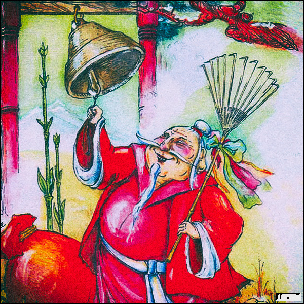
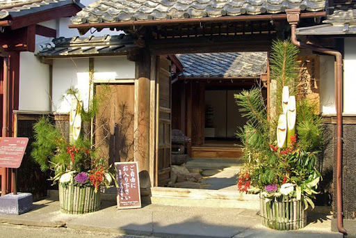
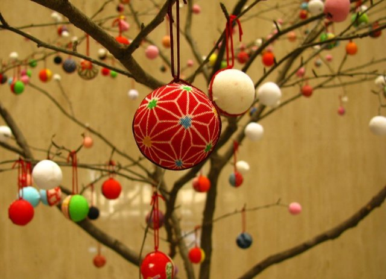
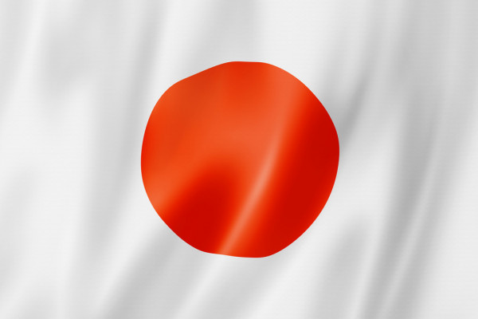

< Повернутися до вибору країни

Японія
Японського Діда Мороза звуть Сьогацу-сан - Пан Новий рік. 108 ударів колокола сповіщають про прихід Нового року в Яронію. В новорічну ніч японські діти ховають під подушку малюнок із зображенням вітрильника, на якому зобрежено сім казкових чарівників - сім покровителей щастя. Японці зустрічають Новий рік в новій одежі. Вважається, що це приносить здоров'я та удачу в Новому році.

Двері будинків на Новий рік прикрашають гіллочками сосни, бамбука та сливи. Сосна уособлює довголіття, бамбук - вірність, а слива - життєлюбність. В будинках ставлять гілки, прикрашені кульками моті, - Новорічне дерево мотибана.

В кожній родині готують новорічні булки з рисового борошна - моті.
В святкові дні діти разом з батьками запускають традиційного повітряного змія та грають в волан.
